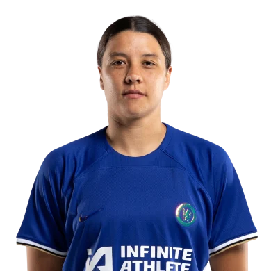

Meet the Staff
Meet the team that enjoys making your day at Lochquarry Outdoor Centre!
Robbie Elliot
Senior Instructor: Land
Robbie is responsible for overseeing all of the land-based activities.
Favourite Activity: Hillwalking in the beautiful Scottish highlands

Claire Jack
Centre Manager
She is in charge of the overall running of the centre and all of its activities.
Favourite Activity: Pole Climb!
Marion Hunter
Centre Administrator
Marion is responsible for taking bookings and arranging activity slots for groups.
Favourite Activity: Making sure everyone has a great time when they visit Lochquarry